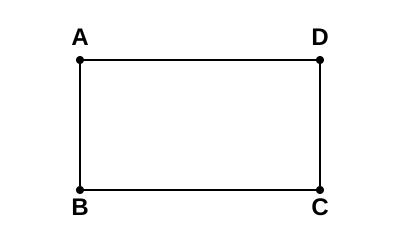
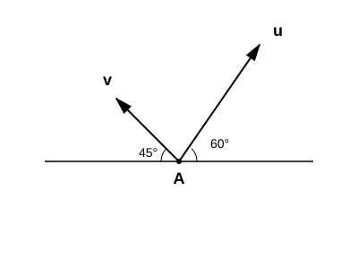

Homework Section 12.3
-
Use the below picture to write the following as single vectors:

- `vec(AB) + vec(BC)`
- `vec(CD) + vec(DA)`
- `vec(AB) - vec(BC)`
-
Consider the following vectors given in the picture below. Draw the following.

- `bb(u) + bb(v)`
- `bb(u) - bb(v)`
- `2bb(u)`
- `2bb(u) + bb(v)`
- `-2bb(u)`
- `-2bb(u) + bb(v)`
-
Consider the planar points `P(2, 4)`, `Q(-1, 5)`:
- Graph the vector `vec(PQ)`.
- Convert `vec(PQ)` to component form and include this vector on the graph from part (a).
- Repeat number three for the points `P(1, 2, 4)` and `Q(3, 5, 6)` in `RR^3`.
-
Let `bb(u) = << -2, 5, -7 >>` and `bb(v) = << 2, -3, -6 >>`.
- Find `bb(u) + bb(v)`, `bb(u) - bb(v)`, `2bb(v)`, `5bb(u) - 2bb(v)`, and `||bb(u)||`
- Find a unit vector that has the same direction as u.
- Find a unit vector that has the same direction as v.
- Find a vector of length 5 with the same direction as v.
- Let `bb(u) = - bb(i) -5 bb(j) + 7 bb(k)` and `bb(v) = 6 bb(i) + 4 bb(j) - 3 bb(k)`. Find `bb(u) + bb(v)`, `bb(u) - bb(v)`, `2bb(v)`, `5bb(u) - 2bb(v)` and `||bb(u)||`.
- A plane flies at a constant groundspeed of 400 mph due east and encounters a 50 mph wind from the northwest. Find the airspeed and compass direction that will allow the plane to maintain its ground speed and eastward direction.
-
The picture below represents the application of two forces, u and v, on an object located at point A. If u and v have magnitudes 12 pounds and 8 pounds, respectively, determine the resultant force, `bb(u) + bb(v)`, along with the magnitude and direction of `bb(u) + bb(v)`.

-
A matrix is a rectangular array of numbers. We add, subtract, and scalar multiply matrices in the same way we do vectors. Perform the indicated operations on the following matrices:
- `[[2, -3, 8], [-5, 1, 0]] + [[-4, 3, 2], [4, 7, 9]]`
- `[[2, -3, 8], [-5, 1, 0]] - [[-4, 3, 2], [4, 7, 9]]`
- `3[[2, -3, 8], [-5, 1, 0]]`
- We usually define matrices using capital letters. Operations are performed in the usual order. Let `A = [[2, -3, 8], [-5, 1, 0]]` and `B = [[-4, 3, 2], [4, 7, 9]]`. Compute `3A - 2B`.
- In a matrix, rows run horizontally and columns run vertically. The order (or dimension) of a matrix is given by the number rows by the number of columns. For example, matrix A from the previous problem has order `2 xx 3`. What is the order of the matrix `C = [[1, 2, 3, 4], [5, 6, 7, 8], [9, 10, 11, 12]]`?